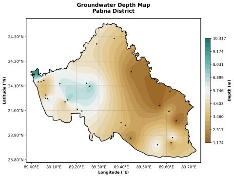

Bangladesh Cyclone Tracks and Exposure Corridor
202655 years of cyclones toward Bangladesh: 12 major storm tracks from 1970 to 2024 turned into a severity-weighted exposure corridor.
Open-source mapping and analysis projects, built in Python and shared on GitHub.
55 years of cyclones toward Bangladesh: 12 major storm tracks from 1970 to 2024 turned into a severity-weighted exposure corridor.

Annual 10 m wind over Bangladesh for 2023 with streamlines and wind roses for Dhaka, Khulna and Chattogram.
Automated pipeline that turns a GeoJSON and a date into a daily temperature map, from Open-Meteo and BMD data.
Satellite thermal analysis of surface water dynamics across Pabna District, with maps and statistics.

Groundwater depth across Pabna District, interpolated from observation wells and mapped in Python.
Harmonic regression on Landsat 8 time series for Pabna District to model seasonal land surface change.